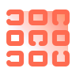

Hyper Text Markup Language
HTML — язык разметки для создания структуры веб-документов. Он определяет содержание и элементы на веб-страницах, такие как заголовки, абзацы, ссылки, изображения и таблицы. HTML обеспечивает основу для создания семантически правильных и доступных веб-документов, что делает веб-дизайн и разработку веб-приложений более эффективными и удобными.

основополагающая информация о технологии, которая как-то косвенно связана с картиночкой
основополагающая информация о технологии, которая как-то косвенно связана с картиночкой
основополагающая информация о технологии, которая как-то косвенно связана с картиночкой